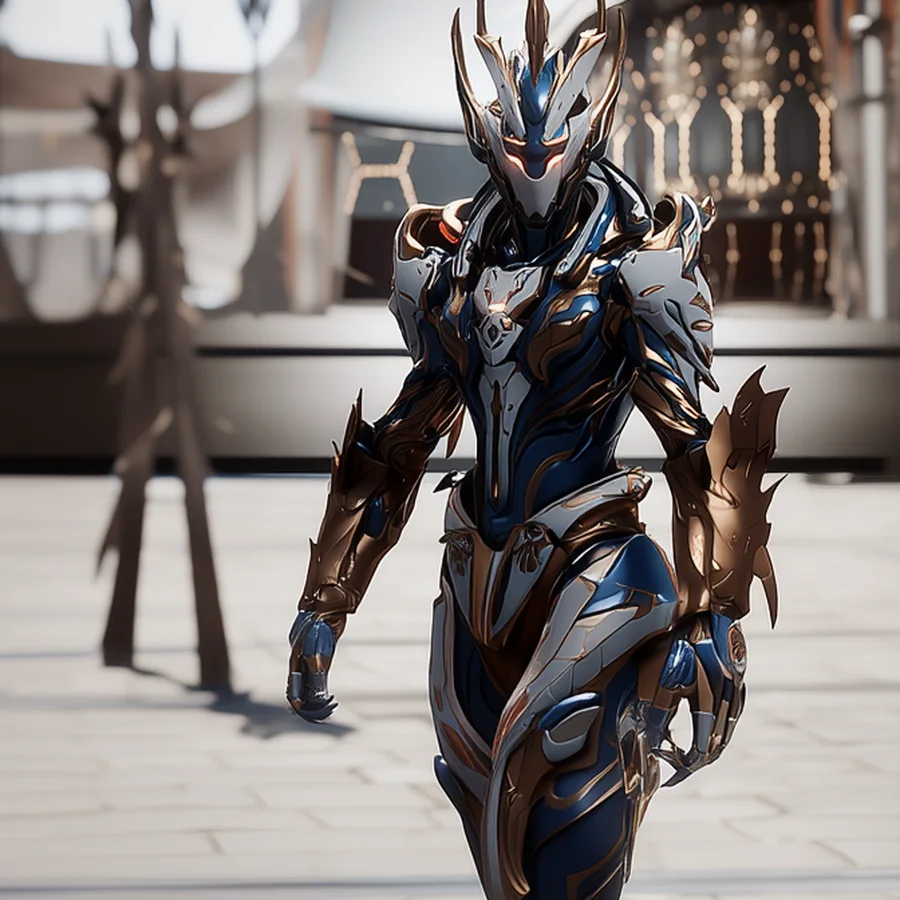

©
©
GENEZYS ARCHIVE · Earth 1 · Legionnaire
Patro
Phrase Abandoner

Archive record
Patro took a vow of silence when swearing the Order's oath and has not spoken since. The Field Net catches every enemy in a snare of frozen space where wounds cannot heal. The knights say that when Patro finally speaks again, the Still Hour will have come.
Combat signature
Field Net
110 Cosmara
350 Animus
310 Vitalis
Captures victims in spatial snare: Deals 60 damage to all for 2 rounds. All enemies cannot be healed for 2 rounds.
Genezys 03:09 ™&©2026LEGIONS
Return to LEGIONS